Design
Research-led concept development, from the first question to something a factory can build.
- User research
- Concept development
- Sketching
- Prototyping
I’m a product design graduate with a keen interest in user-centred design and problem solving. I’m skilled in CAD, prototyping and visual communication, and I care about solutions that are functional and refined rather than one at the expense of the other.
You can see it in the work here. A mobility aid that had to stay under 6.5 kg with the sensors inside. A coffee machine where the pumps and tubing had to disappear into the silhouette. A health campaign where the layout had to do the persuading.
I usually sketch first, but not always. Sometimes the form is already settled in my head and going straight into 3D is quicker. What does not change is working the constraints out on paper before I commit: where the circuit sits, how the fingers move, what a chef needs from a hand.
Never hide your rough drafts. They are the heartbeat of innovation.
Most of my work starts on paper and ends with something I can pick up and use.
My background is a mix, and that has turned out to be useful. SOLIDWORKS and CATIA for the geometry, embedded C++ for the behaviour, plus enough time on the Toyota production floor to know what a factory will actually agree to build. I cost the bill of materials as well, because a design that cannot be made at a sensible price never reaches the people who need it.
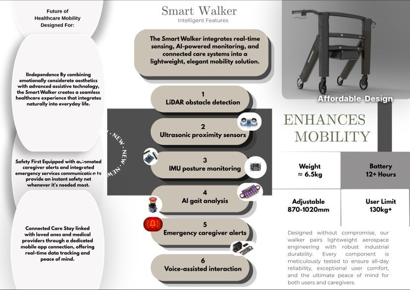
An intelligent rollator that watches posture, senses obstacles, reads gait and calls for help when someone falls. I built it from research through to firmware and a £252.99 bill of materials, and split it into two price tiers so the safety features are not reserved for people who can afford the premium model.
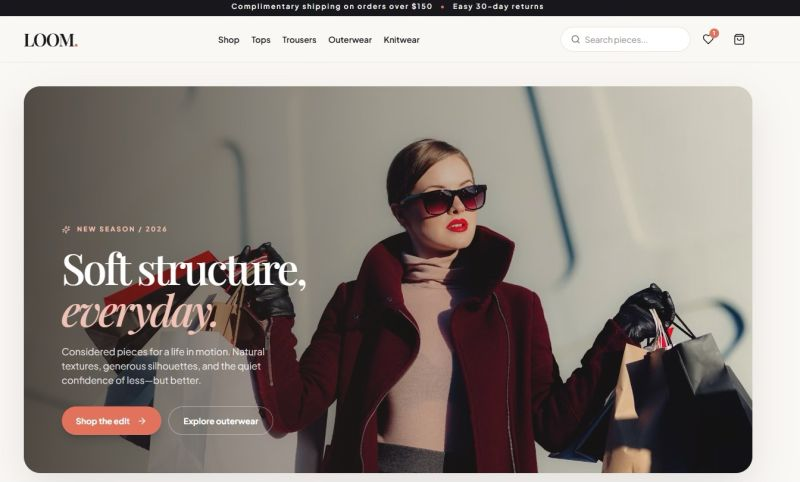
A working e-commerce site I built as a place to run the whole process: six-step customer journey first, then a componentised Figma system that takes a new category without redrawing a screen.

The visual system behind a Nigerian telehealth brand’s awareness campaign. Ten posts so far across three global health days, opening with a symptom people recognise before asking for a booking.
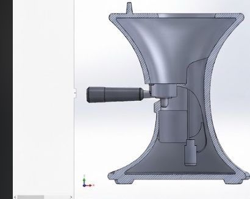
A cobra-inspired coffee machine where the interest is all inside. Pumps, reservoir and tubing had to fit into a tapered organic form without the outside showing the effort.

A weekend spent making a finance screen feel calm. Display type, a forest-green canvas, and the lime accent kept for the numbers that actually matter.

Child safety treated as a materials question, where the silicone decided the product rather than the styling.

A hand for a chef, built from a study of how a hand grips a knife. A flex sensor reads the forearm and an Arduino drives the servos.
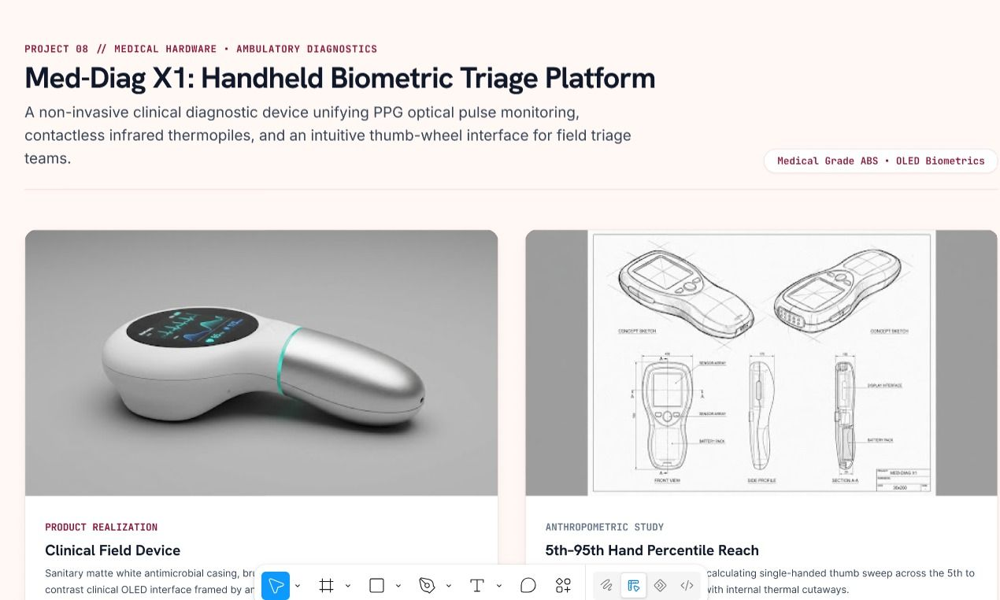
A handheld triage device built for one-handed use, with the thumb wheel placed by measuring where a thumb actually reaches.

A live finance interview-prep platform with good engines and a surface candidates could not read. I audited it in week one, then drew eight screens on a single frame with a three-phase rollout and no change to the engines underneath.
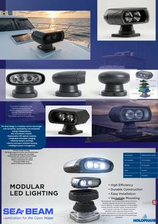
Sea BeamA marine searchlight built to be repaired offshore, not replaced2025 11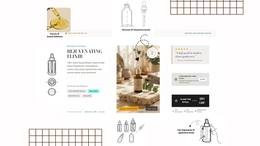
Botanic RitualsStructural packaging and volumetrics for a limited batch2025 12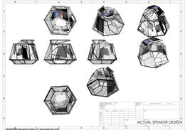
Rugged SpeakerThe first university project, where a simple form became a design decision2023 13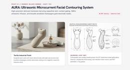
AuraWellness hardware that behaves like regulated hardware2025 14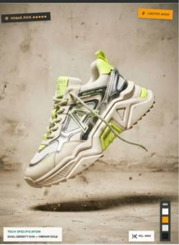
Architect AuraA sneaker concept taken from the shop page into the wear study2025 15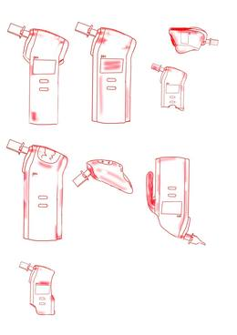
BreathalyserSketch, parametric CAD and a final render, the whole pipeline2024 16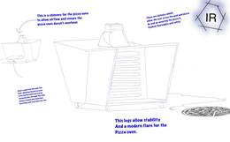
Pizza OvenSketch, cardboard, render, with one idea carried through all three2025 17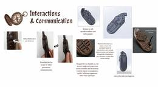
Professor Layton DeviceWorld-building through form, with mechanics instead of touchscreens2024 18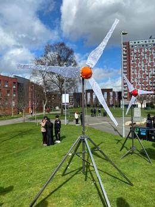
Wind TurbineA full size rotor build, backed by a CFD study2023 19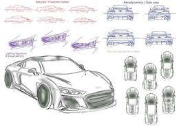
Audi R8 Form AnalysisAn automotive study, where form is function2025 20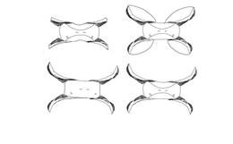
Underwater DroneSurface modelling practice, grounded in water safety research2024 21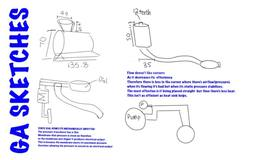
Pump SystemThe paper trail: block diagram, schematic, sizing and CAD2025 22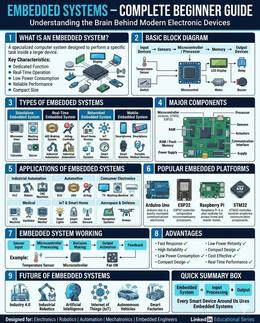
Embedded Systems SeriesA beginner’s guide, drawn so it can genuinely be read2024 23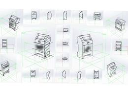
Form Analysis & CADA toaster breakdown and a self-set posting challenge2024 24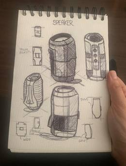
SketchbookPen and paper, and why it still drives the process2024 25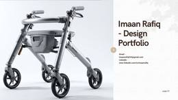
Portfolio DeckThe printed book, 20 pages held to one page rhythm2025 26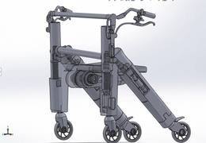
Design Engineering GraduateBSc Product Design & Technology, Aston University2025
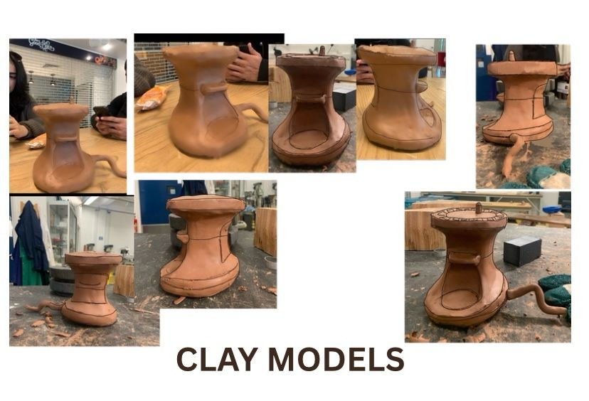
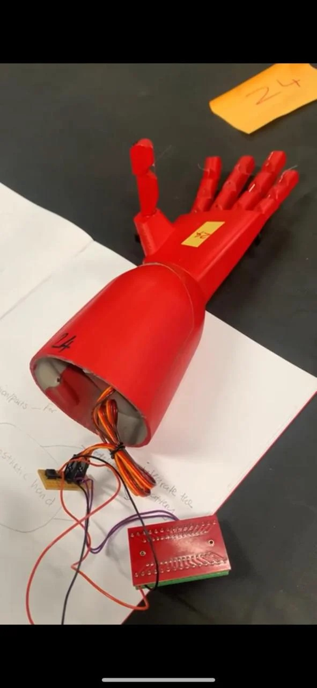
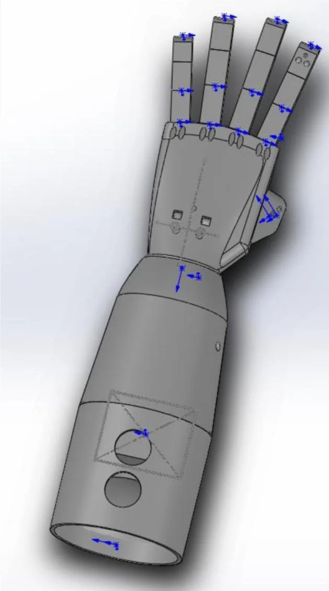
Ideas come out fast and cheap. Ten versions before one is committed.
Clay or card, at full size. Where a form proves it fits a hand.
CAD, firmware, wiring. The part that has to actually work.
Specification, cost, tolerances. The version someone could manufacture.
Research-led concept development, from the first question to something a factory can build.
Parametric modelling, surfacing, rendering and drawings a supplier can work from.
Firmware and sensor integration. The code that makes a physical product behave.
What a design costs to make, and what that means for who can buy it.
UX and UI research, interface prototyping, and the visual assets behind the awareness campaign in the archive.
Week one audit of the live platform, then a redesign proposal for the Interview Academy: eight screen concepts and a three-phase rollout. Read the case study
One month industry work placement covering scope, stakeholders, risk and progress tracking on project-based work. Completed with a Certificate of Professional Work Experience. See the completion post
Rewrote and cross-checked copy for company communications, keeping the tone human and the delivery on schedule.